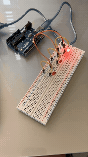
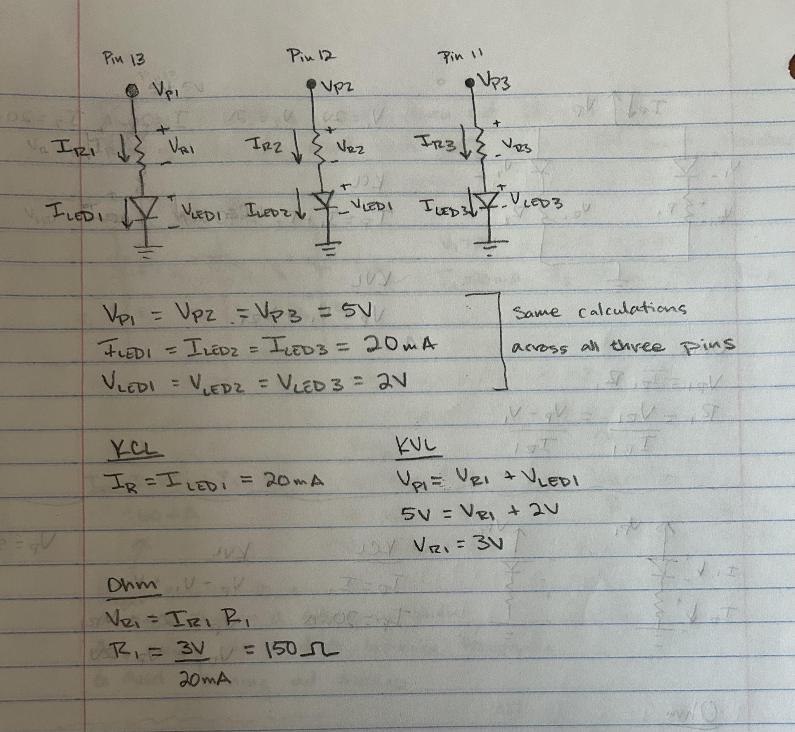
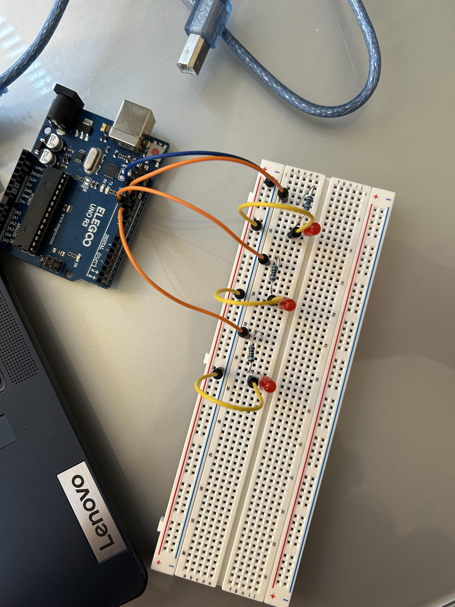

Here is all the documentation for assignment 1!

Pictured above is the schematic of the the A1 circut. I used the schematic to plan out how to build the circut and determine what resiter I needed to use. The pin voltages are each 5V and the LEDs each use 2V with a current of 20mA. Kirchoff's and Ohm's laws, I determined the resister needed to be 150 ohms.

Pictured above is the circut I built based off of the schematic I drew. I used a resister of 100 ohm, since that was the closest to my calculation of 150ohms.
/*
A1 Blink
Ella Gebers
Turns one LED on for one second, then off for two seconds,
alternating which of the three lights are turned on.
*/
//sets ledPin1 to pin 13
const int ledPin1 = 13;
//sets ledPin1 to pin 12
const int ledPin2 = 12;
//sets ledPin1 to pin 11
const int ledPin3 = 11;
// the setup function runs once when you press reset or power the board
void setup() {
// initialize digital pin ledPin1 as an output.
pinMode(ledPin1, OUTPUT);
// initialize digital pin ledPin2 as an output.
pinMode(ledPin2, OUTPUT);
// initialize digital pin ledPin3 as an output.
pinMode(ledPin3, OUTPUT);
}
// the loop function runs over and over again forever
void loop() {
// change state of the first led to light up by setting the ledPin1 to the HIGH voltage level
digitalWrite(ledPin1, HIGH);
// change state of the second led to be off by setting the ledPin2 to the LOW voltage level
digitalWrite(ledPin2, LOW);
// change state of the third led to be off by setting the ledPin3 to the LOW voltage level
digitalWrite(ledPin3, LOW);
// wait for a second
delay(1000);
// change state of the first led to turn off by setting the ledPin1 to the HIGH voltage level
digitalWrite(ledPin1, LOW);
// change state of the second led to light up by setting the ledPin2 to the HIGH voltage level
digitalWrite(ledPin2, HIGH);
// wait for a second
delay(1000);
// change state of the second led to turn off by setting the ledPin1 to the HIGH voltage level
digitalWrite(ledPin2, LOW);
// change state of the third led to light up by setting the ledPin2 to the HIGH voltage level
digitalWrite(ledPin3, HIGH);
delay(1000);
}
Pictured above is the working circut I built running the code I wrote.